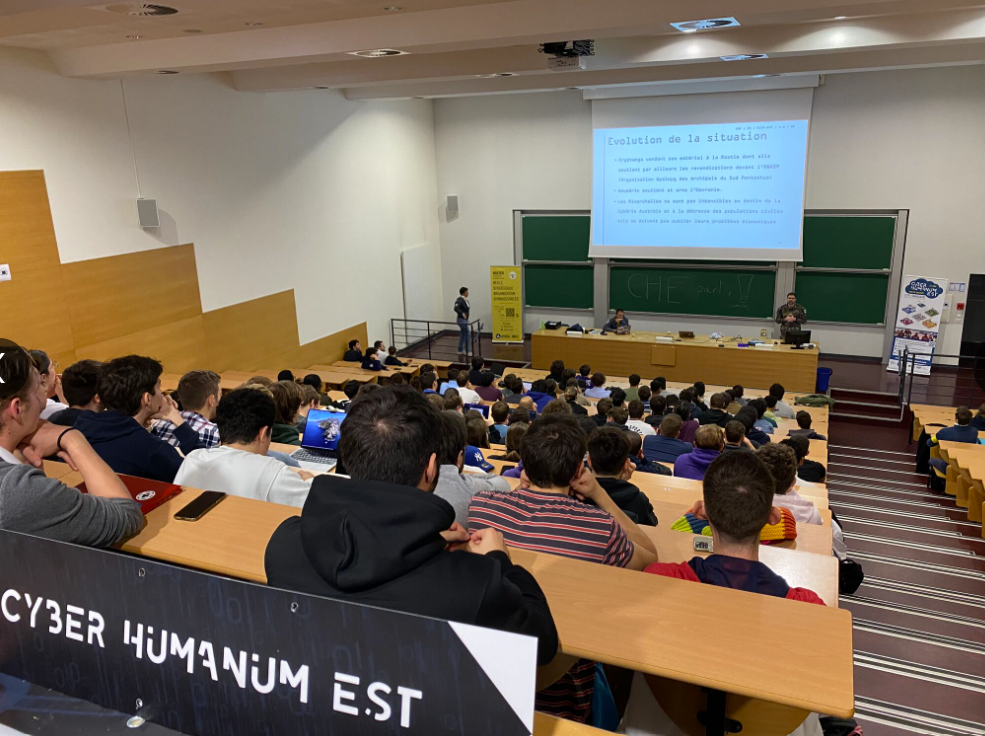
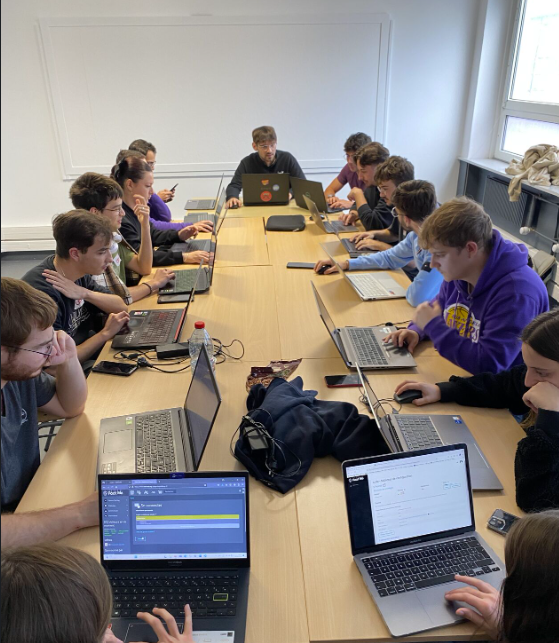

📅 Kick-Off du Cyber Humanum Est
Date : 10 octobre 2024
Lieu : Faculté des Sciences et Technologies de Nancy
Le lancement officiel du Cyber Humanum Est 2025 a eu lieu à Nancy, réunissant tous les participants pour une première journée immersive.
🎤 Présentation du Projet et du Scénario
La journée a commencé avec une présentation en amphithéâtre où :
- 📌 Le projet Cyber Humanum Est a été expliqué en détail.
- 📌 Le scénario Riverchelles - Anuméric - Cryptanga a été dévoilé.
- 📌 Les objectifs et enjeux stratégiques ont été mis en avant.

👥 Constitution des Équipes
Après la présentation, les participants ont été répartis en trois équipes :
- ⚔️ Équipe Anuméric
- ⚔️ Équipe Cryptanga
- 🕵️ APT54 (Hackers indépendants)
🎯 Premiers Entraînements CTF sur Root-Me

Les participants ont effectué leurs premiers entraînements en équipe sur la plateforme partenaire Root-Me :
- 💻 Découverte des niveaux techniques de chaque participant.
- 🤝 Renforcement de la cohésion d’équipe.
- 🎭 Constitution des groupes LID (Défense), L2I (Influence), LIO (Offensive).